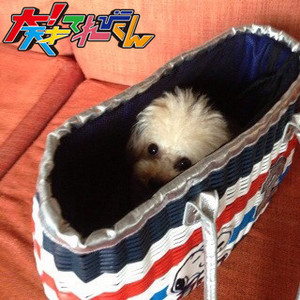
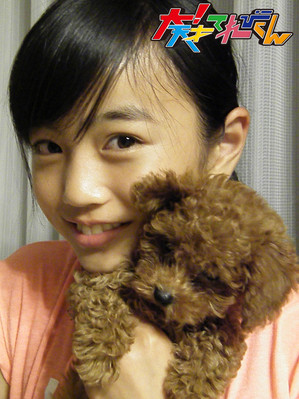
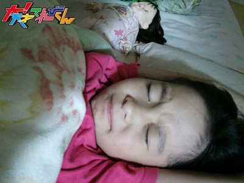

<<2013年7月 | トップページ | 2013年9月>>
2013年8月
【ちょっと大人になったような気がしたとき】岡田結実
★ちょっと大人になったような気がしたとき★
こんにちゎー！
大人だなーって思ったのは、
ママの身長を抜かしちゃった時ですかね☆
前まではママ大きいなと思ってたけど、
今は、もぉ逆ですね！
最近は、ゆぃ大きくなったね！！って良く言われます！！
だから大人になると身長なども成長するんだなって
改めて分かりましたっ！！
これからの目標は身長が165㎝以上行くってのが目標です！
まだ身長は伸びてると思うんですが…。
伸びててほしいんですが…。
頑張って牛乳飲んだり
早寝早起きを心掛けたいと思います#^^#
頑張りまーす(。・∀・。)ゝ
※今回、てれび戦士には「大人っぽい感じ」で写真を撮ってもらいました
★あなたはうどんが好き？そばが好き？★
うどん派で！
うどんはもちもちしてて
食感が大好きです☆
あと、うどんは料理の使い道が豊富で色んな食べ方があるから大好きです！
投稿者:岡田結実 | 投稿時間:18時00分 | カテゴリ：We are 大天才テレビジョン | 固定リンク


 " title="ソーシャルブックマークについて">
" title="ソーシャルブックマークについて">
※NHKサイトを離れます。
【ちょっと大人になったような気がしたとき】島田太一
★ちょっと大人になったような気がしたとき★
はい、こんにちは。島田太一でーす。
大人と感じることは中学生になったらたくさん感じます！！
まず、バスや電車の料金がちがうことですね！！
利用するたびに感じます。
あと、電車のつり革にさわれる様になったことですね！！
低い方だけじゃなく、高い方にもさわれる様になりました！！
車内で転ぶ心配はもう必要ないですねっ！！
でもう少し背が伸びたら余裕に持てますっ！！
写真はエアーつり革です。
★あなたはうどんが好き？そばが好き？★
絶対に、うどんです！！
僕は基本的に麺類とても好きなんで、
そばも好きなんですが、
家ではそばよりうどんを食べる回数がとても多いので
もりうどんはもちろんなんですが、焼きうどんが僕は好きです。
そして、七味をかけていただきます。
投稿者:島田太一 | 投稿時間:18時00分 | カテゴリ：We are 大天才テレビジョン | 固定リンク
" title="ソーシャルブックマークについて">
※NHKサイトを離れます。
【ちょっと大人になったような気がしたとき】延命杏咲実
★ちょっと大人になったような気がしたとき★
まだ最年少の延命です。
最近、電車に乗ったらすわれなかったので立っていました。
まわりを見たらみんなつりかわを持っていたので、
「持ってみようかな！」と思い、持ってみました。
すると、なんと！
持てたのです！
すごくびっくりしました。
私も大人になったなぁ～
早く高校生になって、電車通学してみたいです！
※今回、てれび戦士には「大人っぽい感じ」で写真を撮ってもらいました
★あなたはうどんが好き？そばが好き？★
私はぜったいにうどん派です！
あのモチモチした食感・・・大好きです！
毎日うどんでもあきないと思います（笑）
ちなみに私はねこ舌なので、つめたいうどんが好きです☆
投稿者:延命杏咲実 | 投稿時間:18時00分 | カテゴリ：We are 大天才テレビジョン | 固定リンク
" title="ソーシャルブックマークについて">
※NHKサイトを離れます。
【ちょっと大人になったような気がしたとき】金子隼也
★ちょっと大人になったような気がしたとき★
こんにちは！
隼也です(^O^)／
僕は基本、一年中麦茶派ですが甘い飲み物も疲れた時に飲むとホッとします。
紅茶ならミルクティー!
アイスココアや抹茶ラテなどなど…。
コーヒーは苦手でした。
それが、最近少しだけコーヒーを飲めるようになりました。
実はここだけの話。
僕のおじいちゃんは砂糖を5杯ぐらい入れます（笑）
僕が飲めるコーヒーは、それよりはお砂糖少なめです。
※今回、てれび戦士には「大人っぽい感じ」で写真を撮ってもらいました
★あなたはうどんが好き？そばが好き？★
僕は蕎麦よりもうどんが好きです。
お蕎麦屋さん、ごめんなさい。
モチモチした食感とツルっとした喉ごしがたまりません。
僕は香川県におばあちゃんの家があるので小さい頃からずーっと食べてきました。だから「うどん」にはちょっとうるさいです(笑)
やっぱり讃岐うどんは最高です。
皆さんも讃岐うどん食べてみてくださいね。
投稿者:金子隼也 | 投稿時間:18時00分 | カテゴリ：We are 大天才テレビジョン | 固定リンク
" title="ソーシャルブックマークについて">
※NHKサイトを離れます。
【わたしのペット】山田陶子
★わたしのペット★
うちは、ペットいません。
植物はたくさんいるけどね、依然ご紹介した苔丸とか・・・(・。・)
でも、おじいちゃんが ７年前、トイプードル飼いました。
名前は、陶子の「陶」に、お兄ちゃんの名前から「太」を取って、「陶太」
お兄ちゃんと、私で、弟のように可愛がっていました。
よく、うちにお泊りにきて、毎朝毎晩、私が散歩に行きます。
近所に沢山の、わんちゃん友達ができました。
でも、去年、交通事故で死んじゃいました。
帰ってきたら、ママがすごく泣きながら、「陶太が死んじゃった」というのを聞いて、
大声で玄関で、・・・立ったまま・・・ずっと泣いてました。
あんなに悲しいことは、今までなかったです。
おじいちゃんは、陶太が死んじゃう一か月前に、重い病気が分かりました。
きっと、陶太は、おじいちゃんのために、天国に行っちゃったんだと思います。
おじいちゃんは、それから、ずいぶん元気になり、頑張って病気と闘ってます。
で、お爺ちゃんとこに、新しいペットを、飼いました。
「りこ」さんです。
今度は女の子・・・妹です(^_-)-☆
★最近、はじめて知りました★
もともと多いんです、そういうこと・・・(-_-;)
みんなの普通を知らないっていうか、出遅れるっていうか・・・。
言葉の間違いも多くて、
「なるひそ！」
人の話の収録中に、「なるひそ！」って、書いたら、
すごく笑われて、よく分からなかったら、それは、「なるへそ！」だったんですね～トホホ。
投稿者:山田陶子 | 投稿時間:18時00分 | カテゴリ：We are 大天才テレビジョン | 固定リンク
" title="ソーシャルブックマークについて">
※NHKサイトを離れます。
【わたしのペット】ソーズビー航洋
★わたしのペット★
うちのペット
それは、もちろん…アップルちゃんでーーーす♪
アップルちゃんは、岡山県産まれで、生後二ヶ月でブリーダーさんから我が家に来ました！

最初は、小さすぎてソファーも登れなかったんです！(*^o^*)
しかも我が家にきてから2日目で、僕が寝てる時に顔のまん前で、オナラしてきたんです！
くさっと思っておきたら…
アップルのお尻が目の前に！？爆笑犬のオナラ、がちで臭かった笑
アップルちゃんの良いところは、
殴るふりをすると、殴ってる人のことを、怒るんです！ワン！わん！って！
本当は殴ってないけどψ(｀∇´)ψ平和主義なんでしょーね！
アップルちゃんの悪いところは、
僕の部屋でオシッコするところ。
一応トイレは僕の部屋にあるんですけど、床とか転がっている服の上でオシッコするんですよ！
しかも前は、ランドセルや教科書にまで！
よくもやってくれるわね！でも可愛いから許す?笑笑
あーでも犬嫌いなのはガチで治して欲しい笑
犬が犬苦手ってどーゅーことだよって思うかもなんですけど、本当なんです！
でも、その代わりに人間大好きで、特に男の子が好きなんです！
謎がいっーーーーーぱいのアップルちゃん?みなさんみにきて下さい！
★最近、はじめて知りました★
最近、「大は小を兼ねる」という意味を知りました。
前みんなと部屋で話してた時に誰かが、「大は小を兼ねたんだ！」的な事を言ったんです。
そしたら僕が1人で、「え？大は小を兼ねるって、大便のときに小便するって意味でしょ？」
と言ったら、みんな（特に太一）に笑われました(´･_･`)
本気でそう思ってたから恥ずかしかったです笑
それによくボスが、あっきーと結実と僕だけが答えるクイズ大会を開きます笑（馬鹿の三人だかららしい。）
それで、歴史のホトトギスシリーズなどを知ることも出来てます~_~;
まぁゆいとあっきーと僕は、勉強としては知識ないけど、
いろーーーーーんな雑学とか生活としての知識は持ってるんです！
それをてれび戦士もボスも気づいていないようです…(￣▽￣)ふふふ
Zvー?
投稿者:ソーズビー航洋 | 投稿時間:18時00分 | カテゴリ：We are 大天才テレビジョン | 固定リンク
" title="ソーシャルブックマークについて">
※NHKサイトを離れます。
【わたしのペット】中尾美晴
★わたしのペット★
大切な家族の一員を紹介するよ！！
オーストラリアキャトルドッグのポチエナちゃん（９さい）。
・家族にだけ優しい！他人に厳しく、身内に甘い。
・美晴が泣いたら横に座ってくれる。見た目は怖いが、めっちゃ優しい。
あ！これでも女の子やで。
ロングコートチワワのサンディーちゃん（６さい）、女の子。
・小さいけど態度はでかい。
・でもやっぱり我が家のアイドル。
そのキュートさに家族全員メロメロ！！
★最近、はじめて知りました★
しょうもない事かもしれんけど。
美晴は「アイラブユー」を「アラビュ」とつい最近まで書いてた！
外人さん「アラビュ」って言ってるように聞こえない？？
投稿者:中尾美晴 | 投稿時間:18時00分 | カテゴリ：We are 大天才テレビジョン | 固定リンク
" title="ソーシャルブックマークについて">
※NHKサイトを離れます。
【わたしのペット】野田真哉
★わたしのペット★
僕の家の犬ではないんですけど、
よく泊まりに行く親戚の家の犬なんですけど、
もうとにかくかわいいような
ブサイクなのか…
で、この前、泊まりに行った時
奇跡の一枚がとれたんです！
それがこれww
やばいでしょ。めっちゃかわいい！
★最近、はじめて知りました★
えーっとお弁当の歌ってありますよね。
あの歌のおにぎりの部分なんですけど、
みなさんがしってる歌詞は
「おにぎり おにぎり ちょっとつめて」だと思うんです。
でも本当の歌詞は「おにぎりを にぎり ちょっとつめて」なんですよ！
なにもしらずに歌ってました…
でも、ちょっと本当の歌詞を知った時ショックだったようなw
投稿者:野田真哉 | 投稿時間:18時00分 | カテゴリ：We are 大天才テレビジョン | 固定リンク
" title="ソーシャルブックマークについて">
※NHKサイトを離れます。
【わたしのペット】長谷川ニイナ
★わたしのペット★
私の相棒は…
何回かこの大天ブログに登場していると思いますが、
「ジンジャー」です！
ジンジャーは「アメリカン・コッカー・スパニエル」という犬種なんですが、
顔が縦長いので、「イングリッシュ・コッカー・スパニエル」っぽいんです。
あと毛がクリーム色であることから、
「生姜」みたいな色だねってことで「ジンジャー」という名前になりました！！
そんなジンジャーの最近のブームはバナナ。
人がバナナの皮をむき始めると、
どこからともなくやってきて、ダイニングの椅子の上にスタンバイ。
（こんな時だけアピールして…。）
うーむ。まったく困りますね。。
★最近、はじめて知りました★
読んでいる皆さん、ほぼ全員知らないと思うんですけど。（知っていたらごめんなさい。）
今さらこんなことを知ってしまいました(-_-)ﾘ
「バナナ×ヨーグルトは食べ合わせが悪い」。
・・・・・・・。朝と言えば「バナナヨーグルト」のイメージだったのに～！！！
あと「きゅうり×コーン」、「じゃがいも×キュウリ」もダメらしいです。。
じゃあ、サラダもアウトじゃん！！Σ(Дﾟ;/)/…ｴｴ!?
ちょっとショックなニイナでした。。
投稿者:長谷川ニイナ | 投稿時間:18時00分 | カテゴリ：We are 大天才テレビジョン | 固定リンク
" title="ソーシャルブックマークについて">
※NHKサイトを離れます。
【わたしのペット】相澤侑我
★わたしのペット★
こんにちは！！
僕はペット飼ってないです∑(^_^;)
でも、小さい頃から可愛がってる大切なお友達がいます!!!!!
それは!!!!!!!!!!!!!!!!!!!!!!
仔犬のフィンナー,,☆"
名前は一生懸命考えてつけました♪
とっても仲良しで?す(≧∇≦)
とっても気持ちいぃ(~∇~)zz……,
ちなみに、今も一緒にいます?
可愛い((((((((((o(≧∇≦)o))))))))))
★最近、はじめて知りました★
最近聞いたのですが………
童謡『どんぐりころころ』の歌詞、ちゃんと歌えますか？
僕は今まで
「♪どんぐりころころ どんぐりこ～♪」
かと思ってました！
正しくは .
「♪どんぐりころころ どんぶりこ～♪」
なんですね(^_^;)
えぇええぇっ∑(゜Д゜)
知らなかった…………
ちなみにみんなは
「♪雪やこんこん あられやこんこん♪」
って歌ってませんか？
正しくは
「♪雪やこんこ あられやこんこ♪」
なんですね(^_^;)
「こんこん」だったらきつねだよね笑
いやぁ、10年間間違えて歌っていたなんて………
恥ずかしいですヽ(；∇；)ゞ
投稿者:相澤侑我 | 投稿時間:18時00分 | カテゴリ：We are 大天才テレビジョン | 固定リンク
" title="ソーシャルブックマークについて">
※NHKサイトを離れます。
【わたしのペット】延命杏咲実
★わたしのペット★
動物の中ではねこが好きな延命です。
私の家ではお母さんが動物が苦手なので
ペットがかえません…（泣）
ですが、お父さんはねこが大好きで
お父さんの実家には、なんと４ひきもねこがいます！
この写真はその中で一番なれている「マロちゃん」です。
マロちゃんは私のひざの上に乗りたがるのですが、
とても重いので大へんです。
★最近、はじめて知りました★
「土用うしの日」と言って、
うなぎを食べる日があるのは知っていたのですが、
この間スーパーに買い物に行ったんです。
そうしたら、「土用二のうし」セールをやっていたんです！
「三のうし」、「四のうし」ってあるのかな？
投稿者:延命杏咲実 | 投稿時間:18時00分 | カテゴリ：We are 大天才テレビジョン | 固定リンク
" title="ソーシャルブックマークについて">
※NHKサイトを離れます。
【わたしのペット】島田太一
★わたしのペット★
僕は小２ぐらいの時に、町内で焼きイモ大会があって、
そこでお土産としてカブトムシの幼虫をもらいました。
そこで時が経って、成虫に成長したのです！！
そしてカブトムシを飼いましたー
色々、エサや土など買って育てましたー
写真が無いので絵にしました
★最近、はじめて知りました★
井上陽水さんの『少年時代』の歌詞です。
「私の心は夏模様」なんですが、
「私の心は夏の様」だと思っていました。
夏のような心を持った人の歌だと思っていました。
ちょっと意味がちがっちゃいましたね（笑）
投稿者:島田太一 | 投稿時間:18時00分 | カテゴリ：We are 大天才テレビジョン | 固定リンク
" title="ソーシャルブックマークについて">
※NHKサイトを離れます。
【わたしのペット】岡田結実
★わたしのペット★
こんにちわー☆
自分の飼っているペットはですね☆。
わんちゃん2匹です(*≧艸≦)
犬種は、ティーカッププードルと
ロングコートチワワです！
どちらも小型犬なので
すごーく可愛いです(。・∀・。)ゝ
だけど、
チワワのほーが最近、太り気味なのでちょっと、心配ですね。
ダイエットをしなくては！
こないだ動物病院行ったて
わんちゃんの歳を聞いたら
プードルは7歳で
チワワは8歳でした。
結構お年寄りですね。涙
最近歯も悪くてドックフードを食べるのが大変そうです。
今度は、食べやすいよーに
ドックフードをお湯で柔らかくしてあげようと思います?
でも、本当に
2匹とも可愛いです！
将来の夢がありまして、
その目標は、リスザルを飼うという目標で！！
いつか夢がかなったら良いです(。 ゝ艸・)
岡田家のわんちゃんでしたっ♪♪
★最近、はじめて知りました★
最近初めて知った事は、
ミサンガは自然に切れないと願い事が叶わないって事です。
自分は、ミサンガを自分で切っちゃったりしてて。
そしたらこないだ、
ミサンガは自然に切れないと意味ないよ！って言われてものすごく悲しかったです涙。
今までミサンガ自分で切ったりしてたから、今までのが無駄でした。Σ(・ω・」)」
この事をこないだ初めて知りました！
投稿者:岡田結実 | 投稿時間:18時00分 | カテゴリ：We are 大天才テレビジョン | 固定リンク
" title="ソーシャルブックマークについて">
※NHKサイトを離れます。
【わたしのペット】金子隼也
★わたしのペット★
小学生の時にカブトムシとクワガタを飼っていました。
20匹以上飼っていた時もあり、その時は玄関に虫かごが沢山ならんでいました。
カブトムシとクワガタを飼っていて1番思い出に残っているのが幼虫から成虫にかえした事です。
毎日カブトムシが早く成虫にならないかと観察していました。
成虫にかえった時はお父さんと大はしゃぎしていました（笑）
だんだん食欲がなくなって最後に死んでしまった時はとても悲しかったけど、
思い出に標本にしました。
★最近、はじめて知りました★
最近ではないけれど、Ｊリーグの「チェアマン」は外人だと思っていました。
そう・・・「チェアマン」が名前だと勘違いしていたのです。
そういう事もあって、フダケリの収録で「チェアマン」の控室に入る時、
1人笑ってしまいました。
投稿者:金子隼也 | 投稿時間:18時00分 | カテゴリ：We are 大天才テレビジョン | 固定リンク
" title="ソーシャルブックマークについて">
※NHKサイトを離れます。
【わたしのペット】中里萌
★わたしのペット★
わたしのペットは…
去年の夏からいるハムスターと、最近わが家に来たばかりのトイプードルです。
ハムスターはなぜか？私の手ばかりかみます。
私だけ嫌われているのでしょうか(｡-_-｡)
そして、トイプードルは２年前から心の底からほしくてほしくて
やっとの思いでわが家に来ました。

うれしすぎて、ヒマがあれば遊んだり・遊んだり・遊んだり…しています(?≧?≦)
めちゃめちゃ、かわいすぎる私のペットたちでーす。
★最近、はじめて知りました★
この歳にして始めて知ったことは…
グラスの持ち方です。
お笑い芸人のひげだんしゃくさんの持ち方を見ると、そのような持ち方が印象強くて
家で子供シャンパンを飲むのにその持ち方をしていたら
お父さんとお母さんに笑われてしまいました。
大人になる前に、気がついて良かったです(⌒▽⌒)
投稿者:中里萌 | 投稿時間:18時00分 | カテゴリ：We are 大天才テレビジョン | 固定リンク
" title="ソーシャルブックマークについて">
※NHKサイトを離れます。
【わたしのペット】竹原司
★わたしのペット★
僕のペットは、カメ２匹えす。名前は「カメ吉」と「カメ次（じ）」です。
まずカメ吉は、３年前に夏のお祭りで取ってきて、今までずっとそだてています。
そしてカメ次は大きな公園で、２年前にザリガニつりをしていたらつれて
いっしょにかってもいいかなと思って家にもってかえりました。
今はもうあまりおせわをしてないけど、カワイイ竹原家のペットです（お母さんがおせわしてます）。
（編集部注：小さい方がカメ吉、大きい方がカメ次だそう…わからない……）
★最近、はじめて知りました★
僕はなんと、うさぎのかぞえかたをこのごろ知りました。
１匹だと思っていたけれど、１羽とかぞえると知っておおどろきました。
まだまだ知らないことは、たくさんあるなと思いました。
投稿者:竹原司 | 投稿時間:18時00分 | カテゴリ：We are 大天才テレビジョン | 固定リンク
" title="ソーシャルブックマークについて">
※NHKサイトを離れます。
【わたしのペット】黒澤美澪奈
★わたしのペット★
こんにちは！
みれなです(^o^)v
ペットですか…
私は、今、ペットは飼っないんです
残念です(T_T)
でも！いつか…いつかはっ！
飼ってみたいペットがいます
それは、イルカです(o>ω<o)
↑
(果たして、現実的に飼えるのかどうか？それは分かりません笑)
私が幼稚園生の頃、『イルカにふれ合おう！』というイベントに、遊びに行ったことがあります！
海の中を仕切ってある大きなプールみたいなところに、きれいな魚が泳いでいて、そこにイルカがいたのです！
そこで一緒に泳いだり、餌をあげたり出来たのですが、そのイルカ達がお利口さんで、とても可愛いかったんです♪
あと、不思議なことがあって、イルカの泳いでいるその海の中には、とてもたくさんの色とりどりの小さな魚がいて、イルカにくっついて泳いでいるのです。
どうしてかな？
イルカに食べられちゃわないのかな？
と、ジーーーーーッと見ていたら
なんと！
イルカが、その小さな魚達に餌をあげてるんです！
私があげたイルカ用の餌の切り身を、イルカは口の中に一度入れて、小さくかみ砕いてから吐き出して、周りの小さな魚達にあげてるんですよ～
あのときは、感動したな～(T▽T)
そんな優しくて賢い～イルカを飼ってみたいです♪
この写真は、その時のです！
特に、このイルカはとてもいい子でした(^o^)
★最近、はじめて知りました★
皆さん！うなぎは好きですか？
よく、うなぎの骨が刺さった～！！！
って言いますよね？
でも、私は一度も刺さったことがなかったんです！
刺さって慌てた人を見ても、他人事のように思っていて、
ホントに骨なんてあるの？って思っていたら…
まさかのまさか！
先日食べた時、うなぎの骨が喉に刺さってしまいました…
ガーン (￣ロ￣lll)
うなぎに骨ありました
結構、痛いものですね…
でも、しばらくしたら自然にとれてすっきり！
みなさんも、おいしいものを食べる時は、気をつけてくださいね～笑
投稿者:黒澤美澪奈 | 投稿時間:18時00分 | カテゴリ：We are 大天才テレビジョン | 固定リンク
" title="ソーシャルブックマークについて">
※NHKサイトを離れます。
【私の朝はこうやって始まります】延命杏咲実
★私の朝はこうやって始まります★
休日しか自分で起きれない延命杏咲実です。
私は学校に行く日は6時40分に目ざましをセットしています。
でも、ふとんの中で15分くらいゴロゴロしちゃうのです・・・

そうしてるうちにお母さんが起こしに来ます。
「起きて～！！！」と大きな声で（笑）
そうすると私は、「あと3分！！」と言います。
毎朝こんな感じに起きて学校へ行ってます（笑）
★最近のアイタタタタ★
去年は2回しか学校のプールに入れなかったのに、今年はもう6回も入りました。
なので、すごく日やけをしてしまい、かたがヒリヒリしてすごくいたいです・・・。
でも、あいかわらず泳げませんが、ビート板を使えば泳げるようになりました！
夏休みに学校のプールに通い、今年こそはクロールで泳げるようにがんばります☆
投稿者:延命杏咲実 | 投稿時間:18時00分 | カテゴリ：We are 大天才テレビジョン | 固定リンク
" title="ソーシャルブックマークについて">
※NHKサイトを離れます。
【私の朝はこうやってはじまります】山田陶子
★私の朝はこうやってはじまります★
眠いんで～決まりごとは特にないです・・・www
まず、席についてテレビ観て、ボーってします。
ただ、毎日ヨーグルトに、フルーツグラノーラかけて食べるのは、
かかせませんですな(^。^)y-.。o○
今日は、バナナとキウイとフルグラ☆）
★最近のアイタタタタ★
毎日、痛いことあって、特に思い出せないんですけど。
角が曲がりきれないっていうか・・・(-_-;)
家の中でも、廊下から部屋に入るのに曲がるときとか、
必ず、肩とか、腕とか、足の指とかが、角にひっかかる・・・。
普通に曲がるコツってあるんですかね～(~_~;)
投稿者:山田陶子 | 投稿時間:18時00分 | カテゴリ：We are 大天才テレビジョン | 固定リンク
" title="ソーシャルブックマークについて">
※NHKサイトを離れます。
【私の朝はこうやって始まります】島田太一
★私の朝はこうやって始まります★
おはようございまーす。
まず、7時に目が覚めて
7時15分に完全に起きます。
そして、そのままお風呂場へ直行して
シャワーをあびます。
15分入って、30分に着替えて
朝ごはんを食べますー。
ほんで、45分に食べ終わって
歯みがきをして色々準備をして
8時に家を出まーす
そして、学校に行きまーす
★最近のアイタタタタ★
僕の学校は、水泳の授業をする時は、水泳カードというカードが必要なんです。
それを、友達が学校に行くとちゅうに、忘れたのに気づいて、笑いました。
そして、いざ水泳の授業で、25mを2回泳いだところで、体育の先生に
「島田ー、プールから出ろー」と言われました。
それは、水泳カードにハンコが押されてなかったんです。
先生に見学といわれて、
倉庫の中で水着から、普通の服に着替えました。
その倉庫からでた時の、クラスメイトの視線がすごくイタかったです。
そして、なにより。次の日の学校に行くときが、なんかツラかったです。
投稿者:島田太一 | 投稿時間:18時00分 | カテゴリ：We are 大天才テレビジョン | 固定リンク
" title="ソーシャルブックマークについて">
※NHKサイトを離れます。
【私の朝はこうやって始まります】岡田結実
★私の朝はこうやって始まります★
朝、大音量の目覚ましで起こしてもらわないと
なんかスッキリしないです！
あと、朝起きたら大好きなアーティストさんの歌を聞いて
自分も歌って、やっと目が覚めますね！！
あとは、制服に着替えたら、5分くらい寝て、また準備をします！！（準備が終わったら）
そしたら、家を出て電車に乗って、学校がある駅に到着！
そっから少し歩いて学校に到着です。（登下校は友だちと☆）
朝起きるのが6時。
準備をして6時30分。また少し寝る。5分くらい寝る。
そして、起きて、また準備！！
6時50分に家を出る！
朝はこんな感じで過ごしています！！
★最近のアイタタタタ★
こないだおシャレしようと思って、ヒールをはいてたら
気づかないうちに、くつずれになっていて、ビックリしました！！
かゆいぐらいだったのに、ものすごく、くつずれになってて
自分はどんなににぶいか分かりました（汗）
これからは、くつを買う時は、ちゃんとサイズを見てから買います。
かわいいのがあったらすぐ買ってしまうので（^^;）
今度から気をつけます！！
投稿者:岡田結実 | 投稿時間:18時00分 | カテゴリ：We are 大天才テレビジョン | 固定リンク
" title="ソーシャルブックマークについて">
※NHKサイトを離れます。
ページの一番上へ▲


{kind=link}
{kind=link}
{kind=link}
{kind=link}
{kind=link}